Made for the Pink City
Jaipur,
at your table.
Good food deserves a beautiful first impression. Twenty-eight independent website concepts, each with a different personality and an easier way to order.
Explore the collection ↓The collection
Pick a place.
Meet its personality.
Each folder is a complete standalone website.
All menus and ordering flows are illustrative.
28 concepts to explore
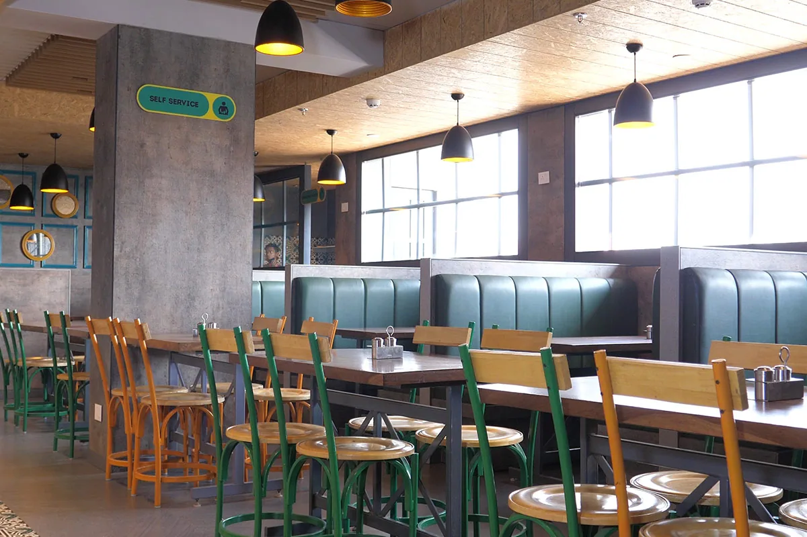
14 / 28celebrationRestaurant & food brand ↗
Kanha
Official visual references · Fraunces 15 / 28royal
15 / 28royalRestaurant & food brand ↗
Tansukh / Tan-Sukh by Kanha
Official visual references · Cormorant GaramondRestaurant & food brand ↗
La Fiamma
Creative brand direction · Barlow Condensed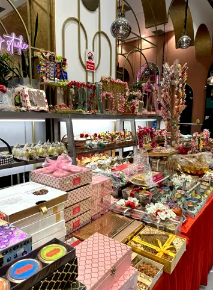
17 / 28bazaarRestaurant & food brand ↗
Rawat Misthan Bhandar
Official visual references · DM Serif Display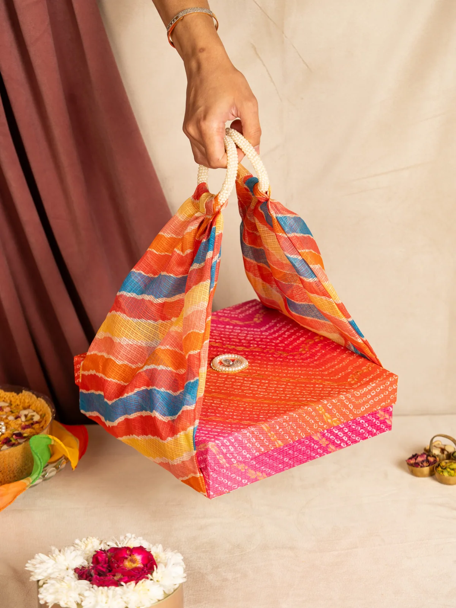
18 / 28heritageRestaurant & food brand ↗
LMB / Laxmi Misthan Bhandar
Official visual references · Cormorant Garamond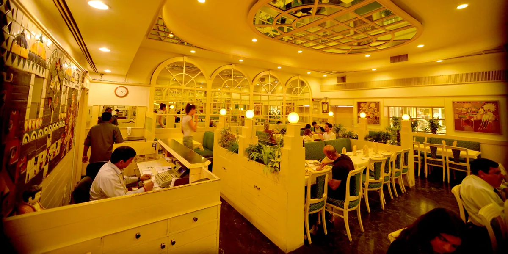
19 / 28brasserieRestaurant & food brand ↗
Niros
Official visual references · DM Serif Display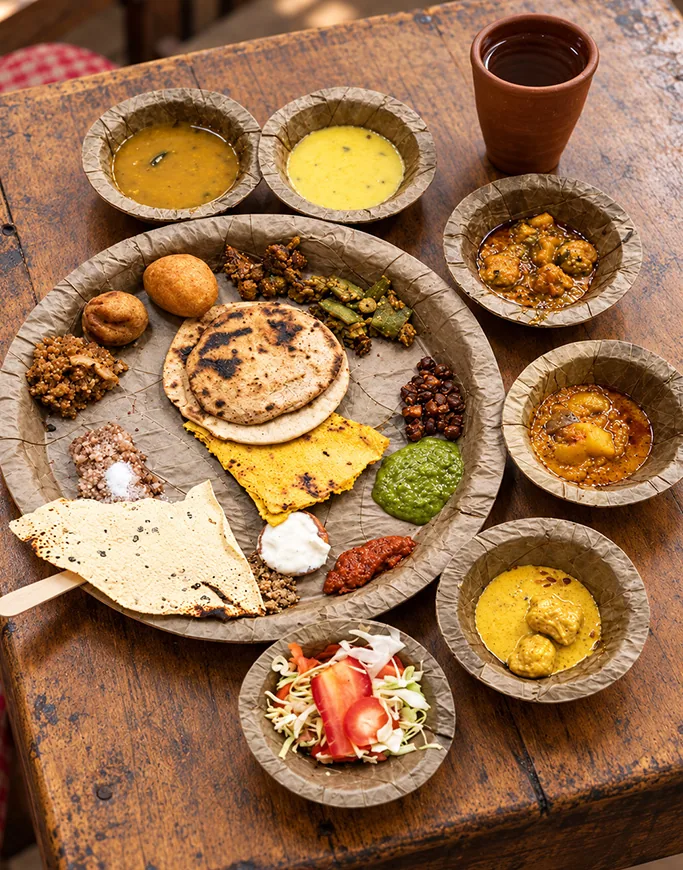
20 / 28villageRestaurant & food brand ↗
Chokhi Dhani Village Restaurant
Official visual references · Cormorant Garamond 21 / 28thali
21 / 28thaliRestaurant & food brand ↗
Thali and More
Official visual references · Fraunces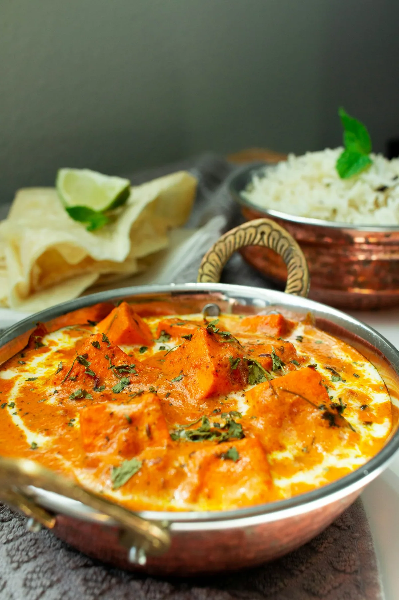
22 / 28courtyardRestaurant & food brand ↗
Spice Court
Creative brand direction · Cormorant Garamond 23 / 28ember
23 / 28emberRestaurant & food brand ↗
Handi Restaurant
Creative brand direction · Barlow Condensed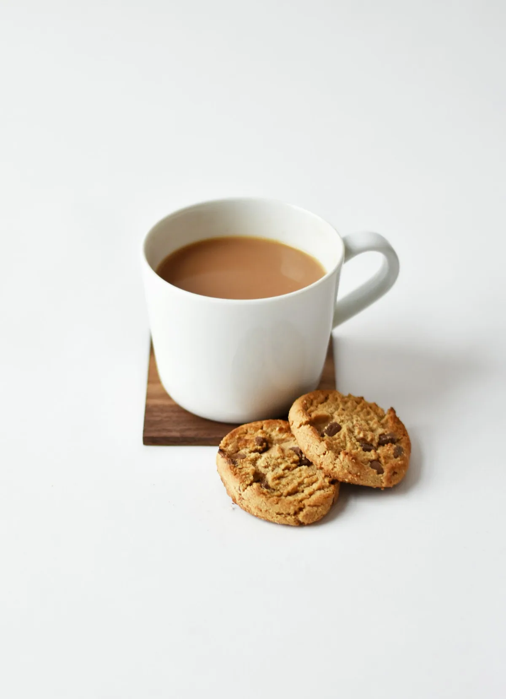
24 / 28chaiCafé ↗
Tapri (Central)
Official visual references · Syne 25 / 28roastery
25 / 28roasteryCafé ↗
Curious Life Coffee Roasters
Official visual references · Syne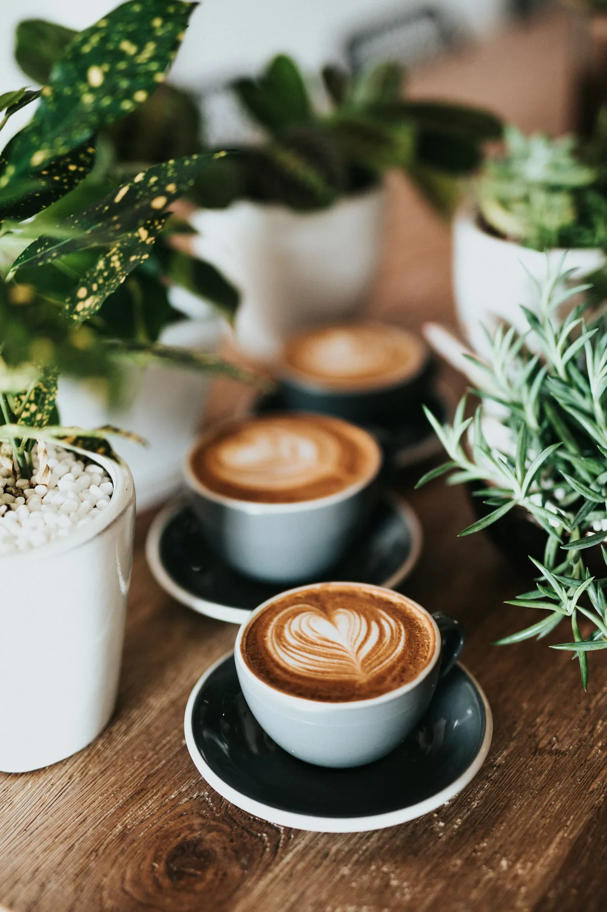
26 / 28lazyCafé ↗
Cafe LazyMojo
Creative brand direction · Fraunces 27 / 28bistro
27 / 28bistroCafé ↗
On The House (OTH)
Creative brand direction · DM Serif Display 28 / 28blockprint
28 / 28blockprintCafé ↗
Anokhi Cafe
Creative brand direction · Cormorant Garamond 01 / 28collage
01 / 28collageCafé ↗
The Messy Door Cafe
Creative brand direction · Fraunces 02 / 28orbit
02 / 28orbitCafé ↗
Cosmos Cafe
Creative brand direction · Cormorant Garamond 03 / 28workshop
03 / 28workshopCafé ↗
The Rustic Spot Cafe
Creative brand direction · Barlow Condensed 04 / 28garden
04 / 28gardenCafé ↗
Bulb Cafe
Creative brand direction · DM Serif Display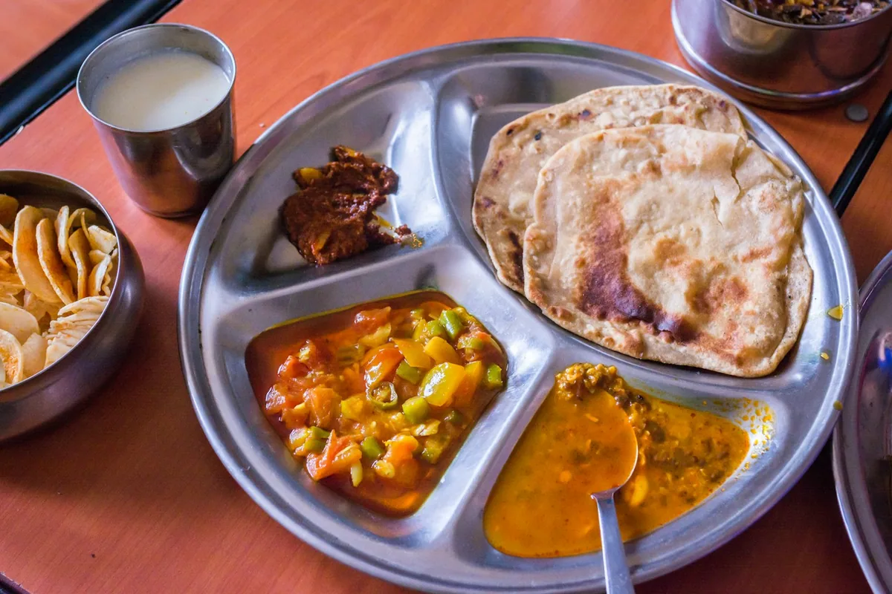
05 / 28streetRestaurant & food brand ↗
C4 Chaska
Creative brand direction · Barlow Condensed 06 / 28postcard
06 / 28postcardCafé ↗
How About Coffee
Creative brand direction · Fraunces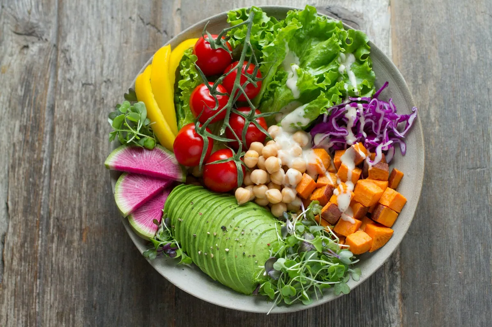
07 / 28conservatoryCafé ↗
The Social Belly
Creative brand direction · Cormorant Garamond 08 / 28pocket
08 / 28pocketCafé ↗
Pocket Beans
Creative brand direction · Syne 09 / 28checker
09 / 28checkerCafé ↗
Cheesy Crazy Cafe
Creative brand direction · Barlow Condensed 10 / 28deco
10 / 28decoCafé ↗
Cafe Bluez
Creative brand direction · Cormorant Garamond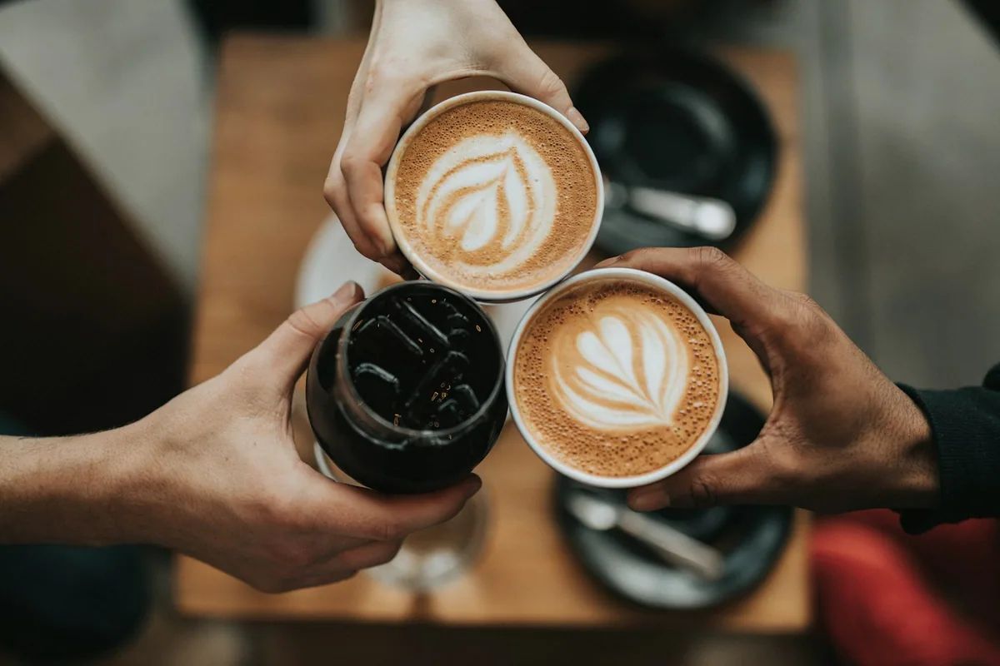
11 / 28journalCafé ↗
Brew & Bite
Creative brand direction · DM Serif Display 12 / 28poster
12 / 28posterRestaurant & food brand ↗
The Bhatura Project
Creative brand direction · Syne 13 / 28engraved
13 / 28engravedRestaurant & food brand ↗
The karchi Restaurant
Creative brand direction · DM Serif DisplayNo matching concept. Try another name or category.